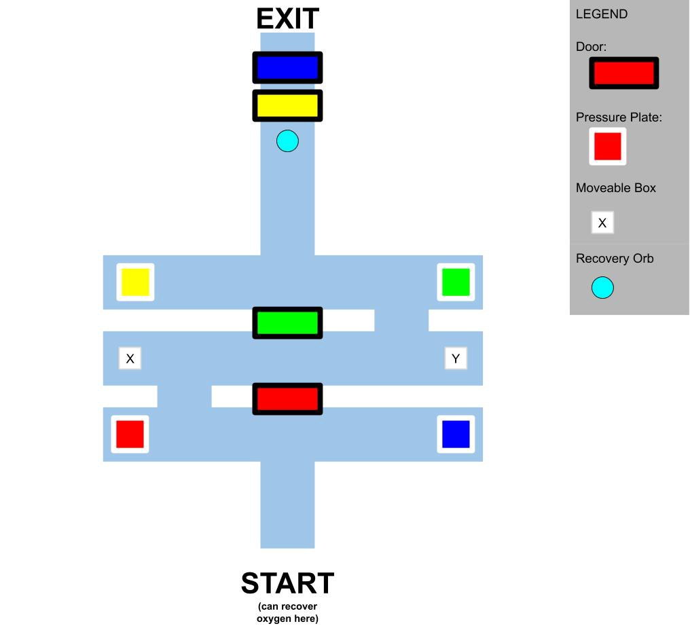
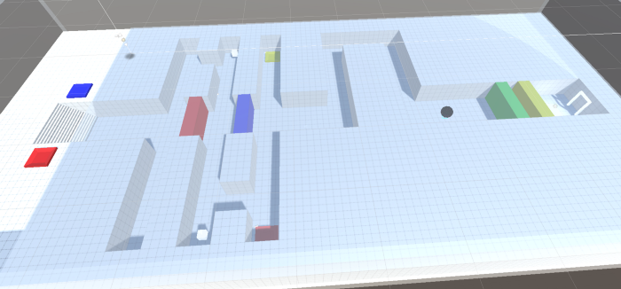
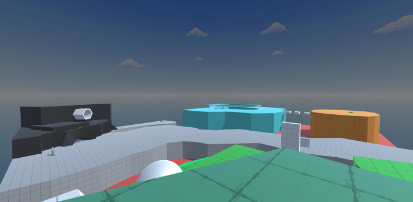
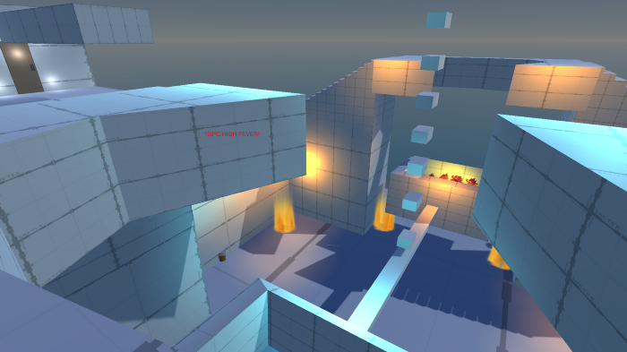
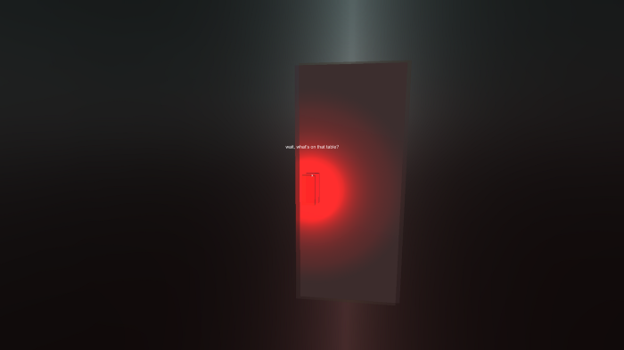

First Playable
While the reaction to our second prototype was positive in many ways, it was just that: a prototype. It became clear to us, throughout the week, that none of us had a clear idea about what type of game we were really making; was it an interactive narrative, a puzzle game, an action game? We were trying to fit all these concepts into a single package and it became overwhelming quickly. Rather than retrofit our ideas to the existing game mechanics that were already worked out, we decided to go back to the drawing board.
We began to discuss what kind of mechanics we wanted to explore, which led us settling on a style of game similar to Portal, The Talos Principle or Antichamber. These three games are first-person puzzle games that largely involved lateral thinking challenges with some light skill-based elements. We also narrowed the thematic focus of our game down as well and decided to focus on the theme of “recovery” in a more pointed way. Each level centers around some debilitating condition that limits your abilities in one way or another. For example, we designed a level around traversing underwater tunnels initially with a limited pulmonary capacity. Because of the strict time limitation for how long you are able to remain in the underwater maze, you need to create shortcuts for yourself. Partway through the level, your oxygen levels are doubled, resulting in more paths being opened up. Cole planned this out on paper, moved to a digital drawing tool and then grayboxed it out in Unity.
The level layout changed slightly in order to accommodate the underwater timer.
Kit worked on a sprawling, colorful level where you have to switch between two characters in order to complete the puzzles. The main character can jump and run, while the character in the wheelchair can pass under lower overhangs.
Miquel build a level where you need to balance your time between hot and cold areas, while also balancing an physical balance by placing pill bottles into buckets to prevent the see-saw like structure from tipping over due to viruses.
Kimi was able to implement sound effects and music into all the levels we created. These audio cues add to the game’s playability and overall feel. Even though all of are levels are mostly gray placeholder geometry and textures, this first playable has quite an atmosphere at times!
While it was daunting to start nearly from scratch, we believe that our game will be better for it. We look forward to the feedback we receive from our peers getting to test out our first playable!